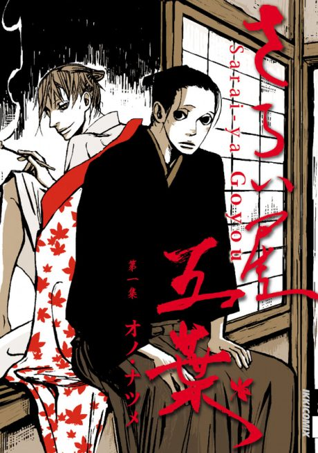

Anime
Anime
Manga2010 · Drama, Mystery
House of Five Leaves
さらい屋 五葉
AniList7.5
Animeter—
Episodes12 ep
MangaCh. 21
Anime finished. Where does the manga pick up?
Start at Chapter21
The anime ends around chapter 20, so start at chapter 21 (volume 3). It is a condensed adaptation and the rest of the 8-volume manga is unadapted.
12059 end
Season 1Start reading here